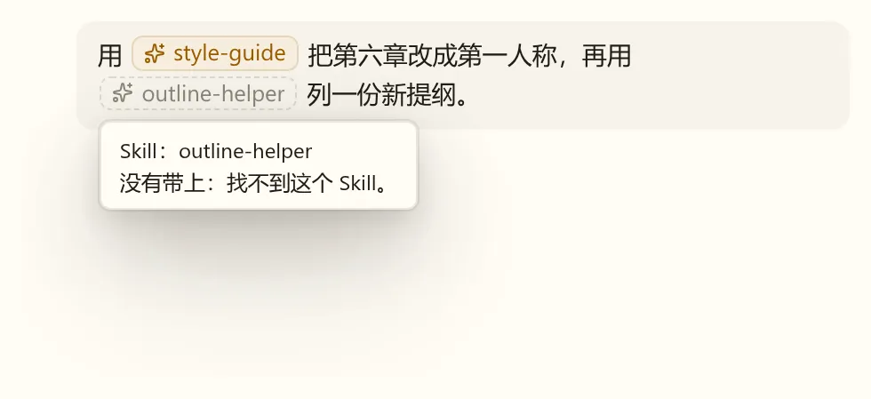
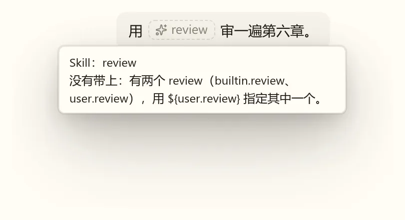
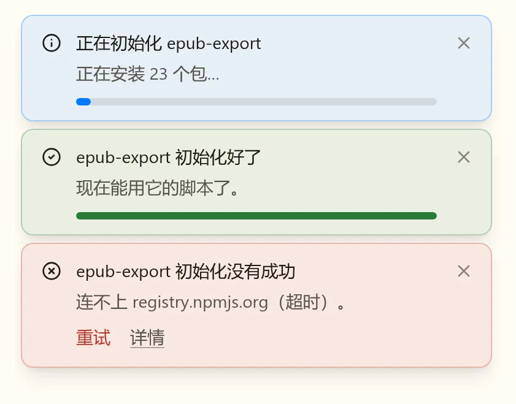
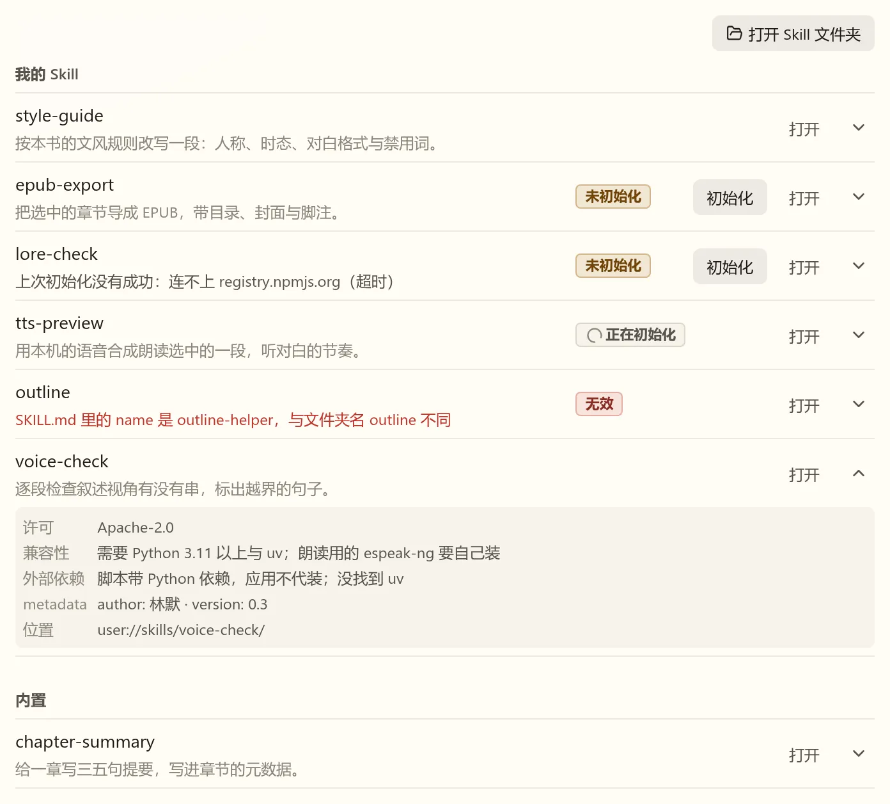
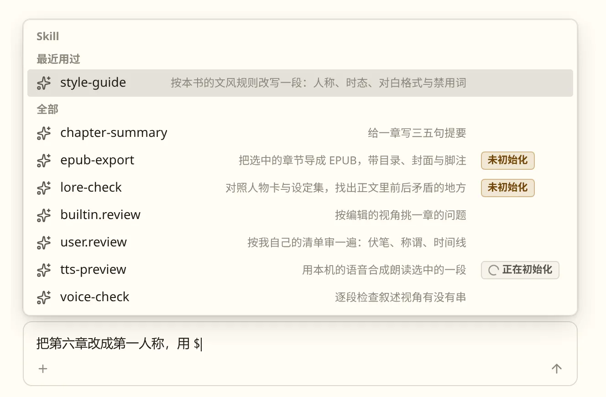
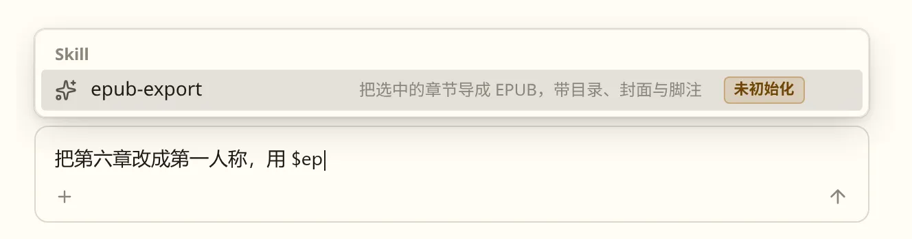
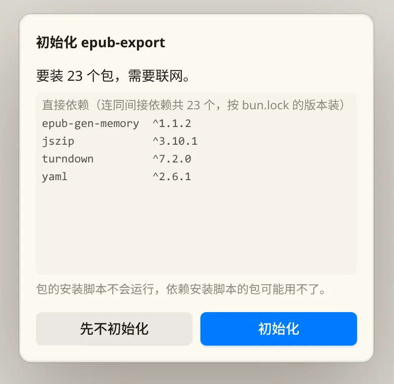
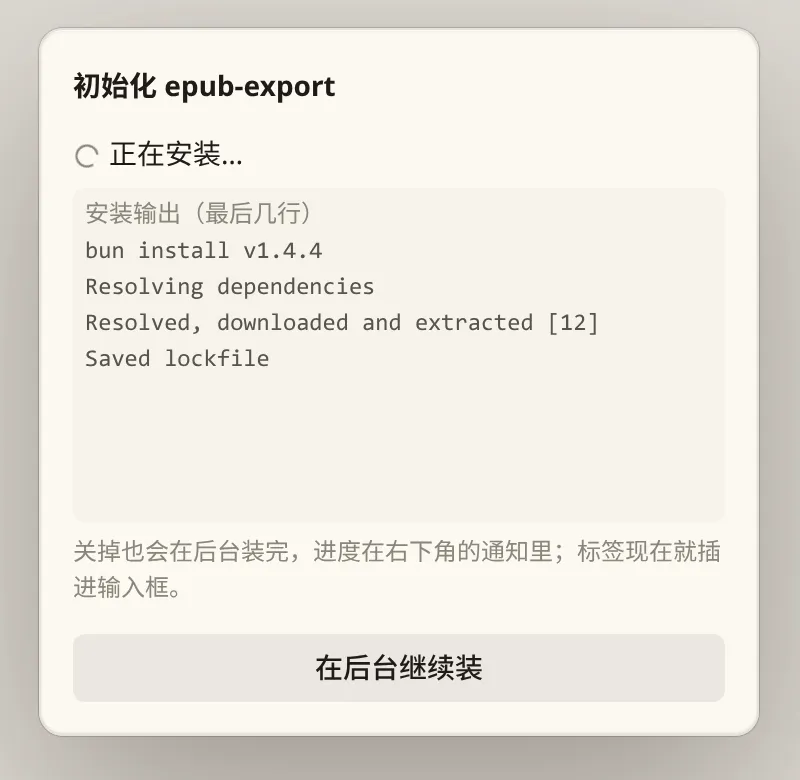
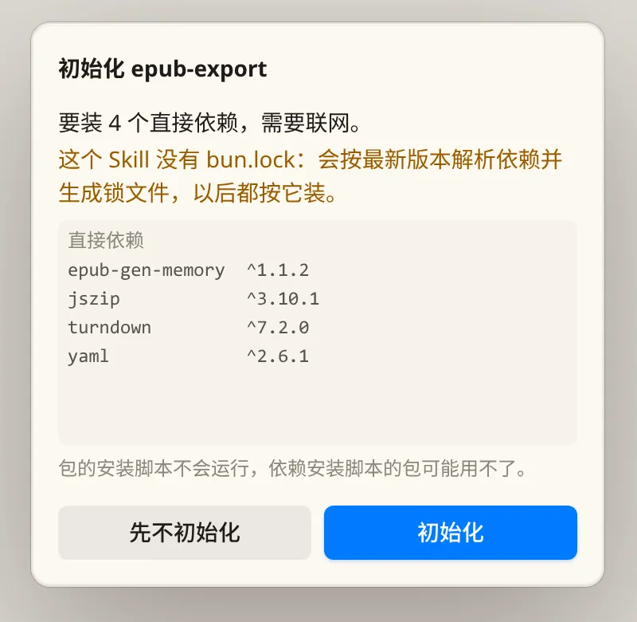
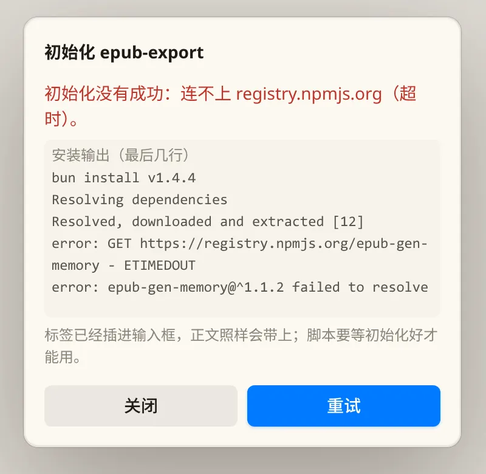

待定用户消息：没带上的原因放进悬停提示



消息下面那一行去掉了。没带上的标签照旧灰掉、改成虚线框，原因放进标签的悬停提示，和上传失败的附件标签一样。图里为了截得到，把提示画成了常显；实际要把指针停在标签上才出现。“无效”“无法读取”两种原因也写在这里。
第 2 轮：按第 1 轮的答复改了 Skill 页、$ 菜单、确认框与用户消息四处，另有一道新题：关掉确认框后，后台安装的进度与结果在哪里看。仍用真实的 nb-ui 组件与主题（亮色），数据是写死的样本。第 1 轮的决定见页底。
你在第 1 轮的备注里提到“和 VS Code 一样，可能要引入一个后台任务系统”。工作台已经有通知服务，通知能带进度条（确定、不确定两种），能改成成功或失败、带动作与“详情”；还没有通知中心，也没有列出后台任务的入口。应用代码里还没搜到用进度通知的地方，Skill 初始化会是第一个后台跑几分钟、要给用户看进度的操作。

A：关掉确认框后右下角一条进度通知；装好改成“初始化好了”，按时消失；失败的常驻，带“重试”和“详情”（安装输出）。通知被关掉了，装完照样发结果；Skill 页同时显示“正在初始化”。都用现成的通知服务，不另建系统。VS Code 给扩展的进度接口（withProgress）也有这一种：进度显示在通知里。
通知中心与“后台任务”入口记成以后的 Task：等出现第二种长任务（装插件、导出整本书）时再做，那时 Skill 的初始化改过去只动一处调用。
B：先另开一个 Task，给工作台做“后台任务”：一个统一入口登记长任务（标题、进度、能不能取消），状态栏一个条目显示正在跑几件，点开列出每件的进度与结果；通知关掉了任务也还在列表里。类似 VS Code 的进度服务加通知中心。
要写一份新 Spec、做状态栏条目与列表；t15 的界面几片等它做完再接。没有草图，选了再出稿。

$ 菜单：黄色徽标

给 nb-ui 的建议菜单加一个项尾徽标字段（图里是草稿里的原型）。徽标在行尾自成一列、宽度固定：同一个菜单里有一项带徽标，每行都留出这一列，说明的右端因此对齐；和菜单左边图标列的规则一样。没有徽标的菜单（@、/）不受影响。




正文固定高度，四种状态下对话框尺寸不变，按钮行不动。中间一块固定区域吃掉剩下的高度，内容多了在里面滚动：确认时列出要装的直接依赖，装的时候与失败后是安装输出的最后几行。
和第 24 条不同的一处：原来定的“输出收起”，改成这块区域一直显示。收起的话固定尺寸下面会空出一块；一直显示，装的时候也能看到它在不在动。


消息下面那一行去掉了。没带上的标签照旧灰掉、改成虚线框，原因放进标签的悬停提示，和上传失败的附件标签一样。图里为了截得到，把提示画成了常显；实际要把指针停在标签上才出现。“无效”“无法读取”两种原因也写在这里。
$ 菜单：用黄色徽标（本轮出了样子，见上）。$ 菜单：名字在前、说明一行，未初始化的在右边标出；最近用过的在前，其余按名字；无效的不列；白名单为空时写一句说明并带去设置的入口。